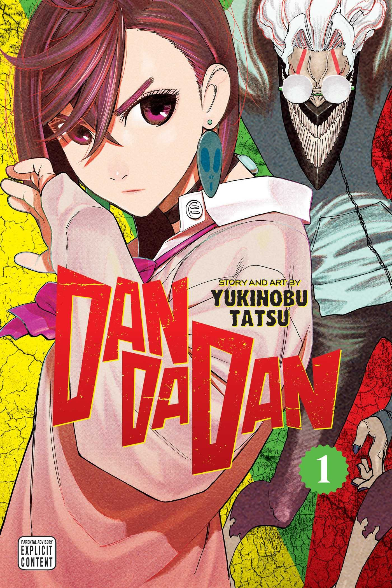

Dandadan
Dandadan is a manga series about Momo Ayase, a girl who believes in ghosts, and her classmate Ken Takakura, nicknamed "Okarun," who believes in aliens. After a bet to prove each other wrong, they encounter supernatural forces and awaken hidden powers, leading them to team up and fight against both aliens and spirits, all while navigating their evolving romantic feelings.